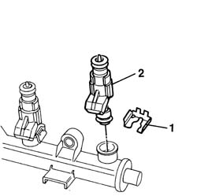

1056B69 SET OF INJECTORS - R.R. - Comp. gasket replacement
- Path
- Procedures > 10 ENGINE UNIT > 1056 PETROL INJECTION SYSTEM > 1056B multi-point injection system (mpi) > 1056B69 SET OF INJECTORS - R.R. - Comp. gasket replacement
- Kind
- repair procedure (removal / refitting; the operation number is the code)
- Applies to
- engines: 1.1, 1.2 8v; all production periods
- Interactive page
- https://sloeber94.github.io/elrnDB-fPnd/en/#/2752495
Applies to: engines: 1.1; all production periods
 Removing
Removing
 Refitting
Refitting1048A10 air cleaner filtering element - replace
1056B60 single fuel manifold pipe, with injectors - r + r
1. Remove the safety clip.
2. Remove the injector.
Proceed in the same way for the remaining injectors.

Applies to: engines: 1.2 8v; all production periods
Removing
Refitting1048A10 air cleaner filtering element - replace
1056B60 single fuel manifold pipe, with injectors - r + r
1. Remove the safety clip.
2. Remove the injector.
Proceed in the same way for the remaining injectors.
Applies to: engines: 1.1; all production periods
Refitting
RemovingBefore refitting, replace the gaskets.
Fit the injector, applying slight pressure to the manifold housing.
Fit the safety clip.
Proceed in the same way for the remaining injectors.
Applies to: engines: 1.2 8v; all production periods
Refitting
RemovingBefore refitting, replace the gaskets.
Fit the injector, applying slight pressure to the manifold housing.
Fit the safety clip.
Proceed in the same way for the remaining injectors.
Topics linked from this page (2)
- 1048A10 air cleaner filtering element - replace
- 1056B60 single fuel manifold pipe, with injectors - r + r